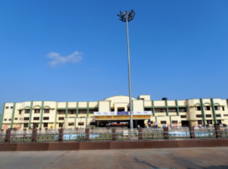

Villupuram
Villupuram junction

Villupuram junction located in Villupuram, a town in Villupuram district in Tamil Nadu, INDIA.
Villupuram railway station covers about 20 acres of a vast area, six platforms – Platforms 1 to 3 occupy a length of 600 metres (2,000 ft) and platforms 4 to 6 occupy a length of 550 metres each and few goods/freight train lines which occupies 650 metres (2,130 ft) each and there are few shunting lines.
Railway lines can be crossed with the help of a mass structured over bridge. The railway station is located off the East Pondy Road in the Keelperumpakkam neighborhood
The Villupuram Old Bus Stand (Town bus stand) is situated at 2 km (1.2 mi) and New bus stand (Central bus stand) is situated at 4 km